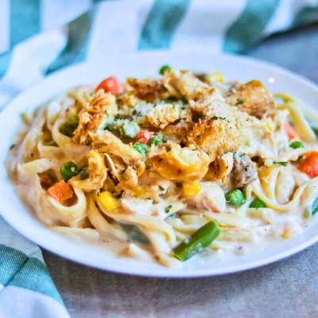

Easy Chicken Alfredo

A household favorite made fast and simple!
Savor the convenience and comfort of this Easy Chicken Alfredo with Veggies,
a quick yet satisfying take on the classic dish. This recipe pairs tender cubed chicken
breast with perfectly cooked fettuccine or linguine, coated in a creamy Alfredo-style
pasta sauce. To add color and nutrition, frozen mixed vegetables and earthy sliced
mushrooms are stirred in, making this a well-rounded meal. A splash of milk ensures
the sauce is silky smooth and perfectly coats every bite. This one-pan wonder is a
wholesome, hearty dinner that’s ready in no time, perfect for busy weeknights or a
hassle-free family meal.
Ingredients
- 1 Lb Uncooked Fettuccine or Linguine
- 2 Boneless Chicken Breast Halves, cooked and cubed
- 1 Jar (16 Ounces) Alfredo Sauce
- 1 Package (10 Ounces) Frozen Vegetables
- 1 Can (4.5 Ounces) Sliced Mushrooms
- 1/3 Cup Milk
Directions
- Fill a large pot with lightly salted water and bring to a rolling boil. Cook fettuccine at a boil until tender yet firm to the bite, about 8 minutes. Drain well.
- While the pasta is cooking, place cubed cooked chicken, Alfredo sauce, frozen vegetables, mushrooms, and milk in a large saucepan over medium-low heat. Cook and stir until chicken is heated through and vegetables are tender.
- Serve warm Alfredo and chicken sauce over cooked noodles.